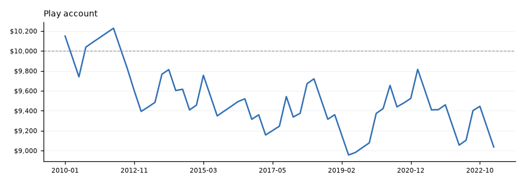

All tests · 2026-11-04 · 15 pairs, 2010 to Oct 2023
Failed Lost money.
Rules tested
- Enter at the next 1-hour candle after a v3 structure is confirmed.
- Stop 0.25 ATR beyond low 5, target a fixed 1.5R.
- Real bid and ask fills, plus 0.7 pips commission.
- $10,000 account, risking $100 (1%) a trade.
Example
 EURUSD-T1, 20 Jan 2010 23:00 UTC. Hit the target: +1.49R after costs, +149 dollars at $100 risk.
EURUSD-T1, 20 Jan 2010 23:00 UTC. Hit the target: +1.49R after costs, +149 dollars at $100 risk.
Results
What it shows
- Won 38.4% against about 41.5% needed after costs.
- Random entries in the same trend did slightly better.
Play account

$10,000 start, risking $100 a trade, in exit order across all pairs.
Chart library
Every trade, with its result. 125 charts. Click one to enlarge, then use the arrows or arrow keys to step through.